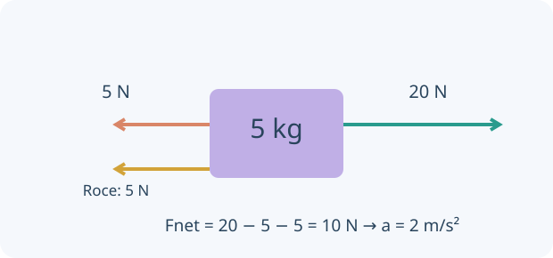

Una idea, un modelo y una experiencia para contrastarlo. Comprobá cada explicación y volvé a intentarlo cuando lo necesites.
0 de 4 lecciones comprobadasAvance guardado en este navegador
Contenidos y correspondencia con el programa
Leyes de Newton e interacciones
Diagramas de cuerpo libre y fuerza neta
Rozamiento estático y cinético; planos inclinados
Tensión, cuerpos conectados y elección de sistema
Normas OAF 2022, programa esquemático y contenidos conceptuales/procedimentales, pp. 14–16. Ver fuente y alcance.
01
COMPRENDÉ Y COMPROBÁ
Tu ruta de estudio.
LECCIÓN 1 / 4 · LEÉ, APLICÁ Y COMPROBÁ
Dibujar solo lo que actúa sobre el cuerpo
Empezá desde la idea.
Elegí un cuerpo y dibujalo separado de su entorno. Cada flecha representa una interacción que actúa sobre él, no una propiedad de su movimiento. Las fuerzas de acción y reacción corresponden a cuerpos diferentes y no se cancelan dentro del mismo diagrama.

Instante de deslizamiento hacia la derecha. La fuerza neta determina aceleración, que no es lo mismo que velocidad.
Un diagrama de cuerpo libre representa fuerzas ejercidas por otros cuerpos sobre el sistema elegido. Peso, normal, tensión y rozamiento son interacciones diferentes. No agregues «fuerza de movimiento» por el solo hecho de que un objeto se desplaza.
La tercera ley relaciona fuerzas de igual módulo y sentidos opuestos que actúan sobre cuerpos distintos. No se cancelan dentro del diagrama de un solo cuerpo. La primera ley permite movimiento rectilíneo uniforme sin fuerza neta.
ΣF⃗ = ma⃗
INTENTÁ RESOLVER ANTES DE MIRAR
Un libro está quieto sobre una mesa horizontal.
Tu desafío: Dibujá las fuerzas sobre el libro y distinguí su equilibrio del par de tercera ley.
Ver el ejemplo resuelto paso a paso
Actúan peso hacia abajo y normal de la mesa hacia arriba.
La fuerza que el libro hace sobre la mesa pertenece al diagrama de la mesa, no al del libro.
LECCIÓN 2 / 4 · LEÉ, APLICÁ Y COMPROBÁ
La fuerza neta cambia la velocidad
Empezá desde la idea.
La fuerza neta es la suma vectorial de todas las fuerzas sobre el cuerpo. Su efecto es cambiar velocidad, no simplemente mantenerla. La masa relaciona cuánto cambia el movimiento con una fuerza neta dada; no confundas masa con peso.
A masa constante, mayor fuerza neta implica mayor aceleración. A fuerza neta fija, mayor masa implica menor aceleración. Las componentes de la segunda ley pueden tener signos positivos o negativos según los ejes.
Una fuerza individual no determina a si existen otras fuerzas. Sobre un piso horizontal sin aceleración vertical, N = mg si no hay otras componentes verticales. Esta igualdad deja de ser automática en ascensores o con fuerzas inclinadas.
ax = (Faplicada − Fopuesta)/m
INTENTÁ RESOLVER ANTES DE MIRAR
Un carro de 2 kg recibe 10 N hacia la derecha y 4 N hacia la izquierda.
Tu desafío: Calculá la fuerza neta y la aceleración; indicá dirección y sentido.
Ver el ejemplo resuelto paso a paso
Fneta = 6 N hacia la derecha.
a = 6/2 = 3 m/s² hacia la derecha.
LECCIÓN 3 / 4 · LEÉ, APLICÁ Y COMPROBÁ
Rozamiento y plano inclinado
Empezá desde la idea.
El rozamiento estático se ajusta hasta cierto máximo; no tiene siempre ese valor máximo. Cuando hay deslizamiento, el modelo cinético aproxima su magnitud. En una pendiente, separá el peso en componentes paralela y perpendicular antes de decidir si el cuerpo se mueve.
El rozamiento estático se ajusta a lo necesario hasta un máximo μsN; no vale siempre μsN. Si el cuerpo desliza, el modelo cinético aproxima f = μkN en sentido opuesto al deslizamiento relativo.
En un plano de ángulo θ, el peso tiene componente mg sinθ a lo largo y mg cosθ normal al plano. Elegir ejes paralelos y perpendiculares simplifica el balance. El rozamiento se opone al deslizamiento o su tendencia, no a cualquier velocidad respecto del aula.
fs ≤ μsN · fk = μkN · N = mg cosθ en el caso simple
INTENTÁ RESOLVER ANTES DE MIRAR
Un bloque de 2 kg desliza en horizontal con μk = 0,20 y g = 10.
Tu desafío: Calculá rozamiento y aceleración para el bloque que ya desliza.
Ver el ejemplo resuelto paso a paso
N = 20 N y fk = 4 N.
Si lo empujás con 10 N, a = (10 − 4)/2 = 3 m/s².
LECCIÓN 4 / 4 · LEÉ, APLICÁ Y COMPROBÁ
Sistemas conectados y tensión
Empezá desde la idea.
Una cuerda ideal vincula movimientos de cuerpos conectados y transmite tensión. Dibujá primero cada cuerpo por separado y luego decidí si conviene analizar el conjunto. Las tensiones internas pueden cancelarse en el balance del sistema sin ser cero sobre cada cuerpo.
Elegir dos masas como un solo sistema puede eliminar fuerzas internas del cálculo de aceleración. Después, estudiar una masa por separado permite obtener la tensión. Cuerda ideal inextensible y polea sin masa son hipótesis, no propiedades de cualquier montaje.
Si una polea tiene inercia, las tensiones de ambos lados pueden diferir porque producen un torque neto. Para una cuerda ideal sin masa en un tramo sin polea real, la tensión es uniforme. Separá las restricciones geométricas de las ecuaciones dinámicas.
Dos carros horizontales ideales: a = F/(m₁ + m₂)
INTENTÁ RESOLVER ANTES DE MIRAR
Dos carros de 1 kg y 2 kg están unidos; F = 6 N tira del de 2 kg, sin rozamiento.
Tu desafío: Calculá la aceleración común y la tensión de la cuerda.
Ver el ejemplo resuelto paso a paso
a = 6/(1 + 2) = 2 m/s².
Sobre el carro de 1 kg, T = ma = 2 N.
02
PREDECÍ · ARMÁ · MEDÍ · EXPLICÁ
La física en tus manos.
Preparando el laboratorio virtual…
03
LISTO PARA PONER A PRUEBA TU COMPRENSIÓN
Practicá, revisá y volvé a la idea.
Ocho preguntas por unidad, con áreas y niveles seleccionables. La autoevaluación avanza al guardar; al final podés revisar explicaciones y reintentar errores. Es práctica local, no un examen oficial ni un envío al panel docente.